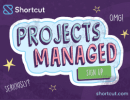

•se•man•tic ['ənsə'mantik]
adjective
1. A nonexistent word that developers use to critique the
work of their peers.
noun
2. Now, it's also a CSS framework. I mean hey… "If the
shoe fits, wear it." ☺
div class="grid-25">
I am 25% wide.
/div>
div class="grid-50">
I am 50% wide.
/div>
div class="grid-25">
I am 25% wide.
/div>
/div>

plan, collaborate, build, and
measure success with
Shortcut. Try it for free.
VIA CARBON
Successor to 960.gs
Unsemantic is a fluid grid system that is the successor to the 960 Grid System. It works in a similar way, but instead of being a set number of columns, it's entirely based on percentages.
For instance, if you want a 50% wide column, simply use class="grid-50". There are grid classes for multiples of five: 5, 10, 15 … 95, 100. There are also grid classes for dividing a page into thirds: grid-33 and grid-66.
SE-Oh?
By using push-x and pull-x classes, you can rearrange the visual layout of page, without affecting its source order. While SEO is a bit of a "moving target," this has been known to help search engines determine the most relevant content on a page.
Typically, code at the top of a page is what search engines tend to focus on the most, and Unsemantic can help to ensure your source code is geared towards that goal.
Built with Sass
Unsemantic was built with extensibility in mind, using Sass. While you can use the CSS as is, some developers prefer to use their own class names, and want only the bare minimum CSS required for a particular page.
To that end, you can use a "silent" Sass approach, and write your own Sass code to use Unsemantic's base styles. For instance, there's a placeholder named %grid-container.
Responsive Demo
These demos use @media queries.
Responsive Demo
Responsive Demo – RTL text
Adapt.js Demo
These demos use Adapt.js.
Adapt.js Demo
Adapt.js Demo – RTL text
Browser Support
Unsemantic supports all major browsers: Chrome, Firefox, Internet Explorer (7+), Opera, and Safari.
If you think you've found a bug, and can verify that it is reproducible, file a ticket on GitHub.
Note: If you reached this site by mistake, perhaps you are seeking Unsemantic's arch nemesis… Semantic.com